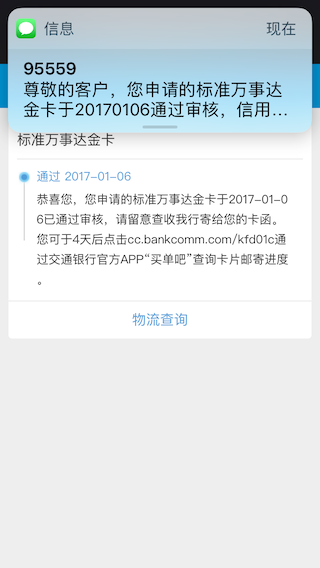
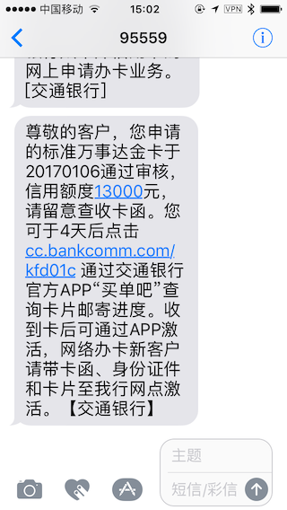

2017年开年就申请了一堆信用卡，本以为跟原来一样不会批卡，谁知道一申一个准，连国有四大行之中的宇宙行和小贱也搞定了。真是令人欣喜，没想到今年开年如此嗨皮。
接下来，这篇日志将持续登载，以记录2017年的玩卡生活。（排序方式以本年首次接触或办理该行卡片时间先后为序）
忠告：用卡不伤身，适度才是本。这个月不论是亲身经历，还是看论坛看生活圈看QQ群，越来越发觉信用卡这个东西不必要太过高端。适合自己，够用即可。不要单纯为了追求高额度和装B卡而去费劲脑筋去弄个白金还是啥的，有这功夫学点知识或者勤奋工作挣得多点比啥都好。
情况小览
持卡总额度：49000
持卡总行数：7(实际5)
持卡行列表：交通银行、民生银行、中信银行、浦发银行、工商银行、建设银行、招商银行

引导目录
交通银行
档案
银行名称：交通银行
所持卡种：标准万事达金卡、爱奇艺联名IC金卡、环球万事达精英版
持卡额度：13000（共享额度）
首批日期：2017年1月6日
征信状况：电话征信、首卡面签激活
信报状况：三个人民币账户、两个美元账户（一卡一户）
申卡
这是所有故事的开始，也是万恶之源。本来是某个土(xuan)豪(fu)群里推倒大妈行的一个人的欢庆的，聊着聊着就突然聊到了交行。本着好奇害死猫（没错我就是想申卡了怎么了你打我啊）的心态，进入了交行信用卡官网。打算试一试初审。
交行在2015年还有2016年上半年系统一直无法让我通过初审，就是连申请单子都不让我填。2017年1月6日，就是刚才说的，在群里讨论着我就打开网页，结果填上姓名身份证号提交之后，竟然让我继续填写资料了！？
我心里莫名的感觉到了一阵有戏的暗示，填写好资料之后就提交了。结果不到3分钟电话征信，问的问题比较奇怪，例如以下有你的曾经的工作单位吗、以下有你曾经的手机号吗、以下有你曾经贷款的额度吗什么的。挂掉电话，感觉有点奇怪。也没来啥短信，正直当时又做完手术又感冒的，就爬床上了。没想到刚爬床上，审核通过短信就来了。


无奈因为批卡的时间太晚，我快要回家了，因此寄到青岛这边的时候我已经坐上火车。让邮递员给我转发的卡片，第二天异地淄博分行激活了。
用卡
批卡第一月：神奇的交行卡
由于此卡激活刚刚一个月，也没什么探索的新玩法，就是第一笔消费一百多给我返了100元的刷卡金（不过刷卡金的名称竟然是“16新户2”，没明白为啥我一个17年办卡的算16新户），还有Apple Pay返还的10元刷卡金。另外在交行怂恿以及看福利多的情况下，又申请了两张卡，分别是：爱奇艺联名IC金卡、环球万事达精英版。前者是自己想办，后者是交行发短信邀请的。
现在爱奇艺的卡的优惠还没到账，不知道什么时候到。环球万事达精英版这张卡有点怪，寻思想海淘或者国外线上支付的，结果无论是Google Wallet还是Amazon都绑定不上卡，倒是今天（02月10日）在Godaddy续费域名的时候支付成功了。比较莫名。
中信银行
档案
银行名称：中信银行
所持卡种：京东白条VISA联名卡(Visa Signature, 全币种小白金)、京东白条微信小程序限量版(金卡)
持卡额度：8000（共享额度）
首批日期：2017年1月22日
征信状况：电话征信、审核通知面签
信报状况：两个人民币账户（一卡一户）
申卡
中信首卡有点太奇葩：由于我6号申请小白Visa的时候一直没有给我批卡，正巧15日中信银行出了小程序限量版（就是所谓有个24K纯金的那张卡）也申请了一张。所以导致两张卡都征信，两张卡都面签。这很神奇。


中信的电话征信主要询问公司的基本信息，以及你的工作情况（可能会涉及收入），征信同时会给你公司和本人打电话（至少我是这样的）。中信的面签也可以异地进行，主要问的问题就是工作单位名称、地址、电话以及住宅地址。只要回答正确就没有问题。在面签的时候可以问柜员初始额度是多少。
用卡
批卡第一月：看中了白条功能
申请这张卡主要是为了与京东白条搭配使用，可获得长达80天的免息还款期。真爽。另外每天签到领取京东钢镚，也是很不错滴~开卡礼目前不知道如何操作，等刷够了再说吧。
开卡礼：中信动卡空间iPhone App就是个渣
本节写于2017年02月22日，相关应用修复可能已经完成，请注意本节撰写时间。
开卡礼比较简单，刷卡累计积分交易满399元就可以换一个新秀丽双肩包。虽然简单，但是兑换特别尴尬——iPhone进入开卡礼之后一直显示“数据签名校验失败”。给客服联系也只是说“请卸载后重装再试”，然而并无卵用。逼不得已换了比较卡啊Android App安装之后兑换完成。10日内送到账单地址，活动规则上竟然写着无法提供快递单号，尴尬。
惊喜：终身免年费 iPhone 7获奖
前两天填了开卡礼之后，在估摸着要发货的时候，我就给客服打了个电话询问了下单号问题，客服说这里查不到，发货时有快递单号的短信（过了几天的确发货给单号了）。当然，打这个电话不仅是为了问快递单号，更重要的事是——把京东白条微信限量版卡片年费免掉。
跟客服询问完开卡礼的事情之后，我随口问了一句关于免年费的事，客服顿了一下之后说“稍等，我给您查询”，之后的事就不用细说了。
当然，好事不止于此。3月3日上午来了个电话，声称是中信银行礼品供应商，说是参加的“389元购iPhone 7”活动参加资格是否是本人。当时以为是诈骗电话呢，结果聊了半天原来是中信小白卡微信限量版中奖了。
之后向中信银行信用卡中心电话确认了的确有此事。太棒啦！嘿嘿嘿。
其他的功能慢慢使用。
工商银行
档案
银行名称：中国工商银行
所持卡种：环球万事达和银联普卡(降级批卡)、大来爱购普卡粉版(3136)、运通双币贷记普卡(3136)、途牛万事达单标普卡(3136)、JCB单标识普卡(3136)
持卡额度：5000
首批日期：2017年2月8日
征信状况：电话征信、取卡面签
信报状况：人民币、美元、欧元、港元、英镑、日元、加拿大元、澳大利亚元和瑞士法郎各一个账户（全币种9个账户）
申卡
工行信用卡纯属没事登录网银顺手写的申请。14年的时候在淄博地区（山东分行）网申一直不给批，这次在青岛地区（青岛分行）网申试了试。01月29日提交的申请，02月08日中午一点接到了0532858*****的征信电话（猜是青岛卡部），当晚查询审批成功，02月09日显示开户成功并出卡号后四位，02月10日显示成功制卡等待收卡，网银星级由3变4。随后查询得知降级批卡为普卡。

关于电话征信，这里我说一句：感觉工银青岛卡部的征信感觉上特别的不正式。我接到一个大叔的电话，带点胶东口音，上来问我是XXXXX的吗（公司简称，看来是老油条了），当时以为是推销的，幸好第二句说是“我是工银信用卡的”这才注意起来。整个电话完事之前都是唠嗑。我觉得工银这样的征信其实功夫做的很到位，从你“聊天”之中了解你的信息是否是编造的。总结起来，“聊天”主要询问的内容如下：
- 工作单位
- 学历信息
- 单位性质
- 主营业务（创业公司）
- 收入来源
- 住宅信息
个人意见，老油条肯定是见过大客户大世面的，如果上述内容他认为不符合逻辑肯定会被拒的。所以如果是包装资料申请工银信用卡，如果随机应变能力不足，建议自我模拟下各种问题的演练（斜眼笑）。
用卡
领卡奇谈
2月20日下午一点半上班后在青岛开发区支行营业部领卡。要说这青岛开发区支行营业部天天业务繁忙的跟集市一样。不过幸好，信用卡领卡在营业部二楼VIP服务大厅，那里清净点，不过因为跟一楼相隔只有一个大棚子，因此还是能听到一楼普通客户办业务的声音（信用卡领卡倒也是普通业务，只不过在支行营业部逼格高点了……）
领卡整体比较顺利，只不过因为我是网申，批卡需要主管当场确认审核，主管从一楼赶到二楼用了20分钟（可见一楼事物得多繁忙……）不过好在等了这么长时间领卡完成，也没多大事。（吐槽光大，不批卡你让我去初审个毛毛）
卡片设置
据说大妈行电话银行特别牛X，今天（2月22日）算见识到了。
今天主要给电话银行致电办理了如下几个业务：
- Apple Pay无法绑定
- 信用卡余额变动提醒
第一个，致电电话银行，刚接的客服不清楚转接了山东信用卡客服之后查询得知现在Apple Pay绑定设备手机号必须与银行柜台预留手机号一致才可以。好吧这样只能去柜台了，顺便今天去领2017年纪念币，一起办了。
柜台去的是淄博高新区支行营业部，银行比较大，但是比青岛开发区支行营业部清净，对冲门就是自助办理机，没等大堂经理问我就自己瞅了瞅机子，发现有直接修改手机号的按钮，于是顺手操作起来。最后按到大堂经理审核确认的时候，才开始找大堂经理，发现经理已经在旁边站了一会了。大堂经理很迅速，核验了身份证就完成了办理。
第二个直接在电话银行办理的，很快，300元以下的融e联提示，300以上短信提示，暂时免费（怀疑没啥问题就永久免费了吧）。不再赘述。
附属卡快速发卡(代码3136)：不普及的隐形业务
已经办成并领卡
前文叙述后，各位可知我是有集卡爱好的（嘿嘿嘿）。因此抽了个空，3月9日，去了附近的工行网点，咨询办理此业务。第一次去了青岛太行山路支行（黄岛开发区长江中路与太行山路路口东北角），询问了两个年龄大的大堂经理（感觉叫大堂大爷都行了……）都说不知道，让我去理财非现金柜台问问那个年轻小伙子（我叫应该算大哥了）。
过去之后，柜员翻了翻青岛分行发的文件，发现3136是去年年底下发的”磁换芯“业务操作代码，但并不知道3136附属卡快速开卡也是这个代码，表示需要请示上级。于是拨打了青岛开发区支行营业部、青岛分行卡部电话，前者表示不知，后者未接通。由于业务办成会扣业绩的问题，最终未能办成，但是态度非常友好。因此在之后了解了商友卡，就在这办的。
出了这家，本着论坛上”一家不行换下一家“以及”办不成业务誓不罢休“的精神，我又步行去了距离这家银行2公里左右的青岛珠江路支行（在金石国际广场附近）。进去之后又是一个大堂经理（大爷(⊙﹏⊙)），询问亦是不知，但随即让我去问理财非现金柜台，理财非现金柜台也是个小哥，虽然也不知此业务，但是随即让我取号去柜台办理。
取号，等号。叫号之后是一个小姐姐柜员（应该是80后），她也不知道3136的附属卡快速发卡业务，也是只知道是”磁换芯“业务。不过她可以给我一试（毕竟我拿着3136操作的那四张图片了，嘿嘿）。一通操作，签字签单，完成。
（听小姐姐柜员说，青岛下的通知是不允许寄卡的，所以只能选网点领取）
3月16日，正好是1周时间，银行打来电话要求来领卡。去了之后很顺利的签了单子领了卡。3136了一共四张卡，分别是：大来爱购普卡粉版、运通双币贷记普卡、途牛万事达单标普卡、JCB单标识普卡。帮忙办理领卡业务的正是上次让我去柜台的那个小哥，他还有印象关于我询问这个业务的事，开卡完成之后他还嘟囔了一句”回头我也去弄几张“。哈哈。
我所在地区是0532青岛，区域代码3803，隶属青岛分行，青岛分行独立卡部。（图后有要点归纳）
要点总结：
- 青岛分行下发的文件说3136交易代码是做”磁换芯“业务的，并没有说明3136是附属卡快速发卡业务。因此是可以办理的，但是需要运气，需要碰上一个胆大细心且愿意给你做的柜员。（毕竟业务办错会扣业绩，各位也体谅下）
- 如果你是十分想要办，这家不行那就换下一家吧。
- 青岛分行下的规定是不允许寄卡，只能到网点领取。不知道有没有0532地区的办理寄卡成功的。我是得跑一趟网点，但是下卡很快，1周7天5个工作日到卡。
- 所挂运通双币贷记普卡确认免年费。
民生银行
档案
银行名称：中国民生银行
所持卡种：民生in卡、民生京东小白卡金卡、民生万事达全币通卡
持卡额度：10000
首批日期：2017年2月9日
征信状况：首卡面签激活
信报状况：一个人民币账户（多卡一户）
申卡
同工行卡，其实也是无心插柳。提交申请是02月04日在支付宝蚂蚁信用里，接到初审短信是在02月09日，无电话征信。目前等待终审短信。

02月10日系统查询状态为“录入”，02月11日系统查询状态为“已核准”，02月12日系统查询显示“已产生卡片”，且出卡号，询问客服短信只有发件之后才有，坐等发卡。
02月17日收到卡，期间并无短信。02月20日进行面签激活，面签地点在青岛开发区支行。去的时候那个银行还是一如既往的清净，很快就完成了办理。
用卡
开卡礼：巧了的开卡礼
我申卡的时候还没有开卡礼这一说。结果开卡前一天，民生银行App的banner就说有开卡礼。结果点进去一看开卡礼日期，2月9日。好悬，我的卡审核通过是2月10号。可以享受咯~
不过这个开卡礼有点怪，有资格之后需要到3月16日到微信银行进行预约。这就尴尬了，还得等着。
建设银行
档案
银行名称：中国建设银行
所持卡种：风尚华润万象城IC卡金卡、日本旅行卡JCB金卡、龙卡全球支付银联IC金卡
持卡额度：5000
首批日期：2017年02月13日
征信状况：审核通知面签
信报状况：一个人民币账户、一个日元账户（一卡一户）
申卡
同工行卡、民生卡，其实也是无心插柳。提交申请是02月09日在网银里，用U盾提交的，接到初审短信是在02月10日，无电话征信。
2月13日一早来青岛中山路支行进行面签，面签是在自助终端机上进行的，特别快，几乎没有五分钟。（想想我坐车两小时过来办五分钟业务，也是尴尬。）
用卡
领卡与用卡
领卡无悬念，约投挂号。用卡也没啥特别的，感觉也没什么别的特殊的，开卡礼什么的并没有看到。到目前为止。
浦发银行
档案
银行名称：上海浦东发展银行
所持卡种：青春卡校园Visa版、青春卡银联校园版、中移动and和青春卡银联校园版
持卡额度：0->3000->8000（共享额度）
首批日期：2015年9月
征信状况：首卡面签激活
信报状况：
(2016年前)三个人民币账户、一个美元账户（一卡一户、一卡双户）
(2016年后)一个人民币账户、一个美元账户（多卡一户）
申卡

申卡比较偶然，时间比较久远了。当时是大二下学期暑假，2015年，8月底看到的浦发宣传页面，感觉不错，就申请了。
申请过程不再赘述了，下卡很容易，毕竟0额度。寄来的就是0额度，当时下卡的时候要求提交担保以提额，其实申卡的时候已经提交了，只不过很怪，不知道为什么是下卡之后进行的额度更改。下卡激活三五天后，数学建模国赛的第一天，提额短信就来了。
（可能是因为学生卡的政策原因，只能先发0额度再调额。不过不清楚为什么我调额调整的如此快，我一个朋友也同期申请了，没有额度，同班同学，家里土豪，父母都是银行高层，也没批额。感觉自从我收到提额之后就没听别人说过提额，怪事。自己琢磨，当时看到腾讯征信公众号推送的与浦发银行信用卡中心合作的新闻，而且当时我就已经有腾讯征信的内测等级了，我一直在猜测提额是否与这有关。）
下卡开卡跟正常信用卡一样，首卡需面签。于是做了3班公交车，到了离学校最近的浦发银行进行了激活操作。
由于本人有集卡症，另外因为参加了一个数学建模比赛，需要用Visa或MasterCard缴费（知道的朋友就猜到是哪个比赛了）。因此没过几天申请了另外两张青春卡校园版（分别是中移动and和青春卡大学生版和浦发青春校园卡Visa双标版）。至此，我的浦发信用卡申卡之路告一段落。
用卡
【信用卡论坛投稿】【用卡实测：浦发银行青春卡校园版】陪伴度过了2年大学时光的青春卡
浦发的老业务：分期提额
三张卡陆续下卡后，我一直在主刷浦发青春卡Visa校园版。15年的时候浦发还是三张卡分别独立在征信报告上显示。同时，青春卡校园版每张卡的额度也是独立审批，但是额度共享（这个令我很新奇）。反正一直如此，3000额度用到了年底，直到下面这条短信到来。
巧了，当时的我正烦躁我手上这个联想K3 NOTE出现了随机无法接电话的严重问题（对！就是截图的这个手机！手机不能接电话！），还在琢磨着怎么省钱换一个，正好是又分期提额又换了个手机，于是就回了个“XM”申请了一款小米4c。（穷鬼没钱用iPhone啊……）
发了之后过了一天没动静，第二天，12月30日，提额短信来了。
8000，对我当时来说够用了，这个额度，这个卡我又用了一年。直到近期，以公司职位申请了其他银行的更高额度信用卡，才用得少了。
权益与羊毛：青春卡校园版的专享羊毛
看论坛貌似没人用这种特别的卡，对这个特别版的羊毛了解不多，我就简单说几个吧，不一定只有校园版有，但是是我比较在意的几个。分享给大家。（大部分羊毛年代太久远了，而最近的羊毛其他帖子也各种有图，所以就不放图了，只是描述描述）
四六级包过险
就是不过赔32元。这个领过之后我竟然给忘了，结果当次六级没过也没赔那32块钱。(ಥ _ ಥ)
积分兑影视平台会员
这个刚办卡之后的一段时间内特别实惠，一分钱的乐视会员或者爱奇艺会员（相对来说乐视会员会好用点，虽然我喜欢爱奇艺会员权益），正巧那段时间上映了《太子妃升职记》我女票在看，乐视会员抢鲜看两集。反正那段时间女票全靠我乐视会员看这个剧了。
电影特权
这个一直有，而且没停过，反正优惠力度不是买二免一就是单张票减10元。不过不好抢啊……我貌似只抢过一次。
星期四抽奖
从来没抽到过，普大喜奔App就是个渣。
活动就是每周四上午10点抽奖，抽到下午14点的积分兑换抽奖资格或者是星期五的抽奖资格。反正我从来就没中过奖。
就今年过年抽奖抽中了1元买8斤北大荒大米，吼哈哈，家里一年的大米都不愁了。
卡片小结：陪伴大学时光的首卡
优点：
- 万用随借金7折，消费分期9折。
- 有一定几率下批额卡，不同于招行Young卡校园版的0额度封存固定额度。
- 除缺点之中所说的权益外，享受正常信用卡服务于权益。这一点就不同于招行Young卡校园版，后者除消费和“掌上生活”APP权益外无任何信用卡服务。（例如分期或现金分期）
缺点：
- 额度有限，本科生最高8000，研究生最高12000。而且无临时额度申请权限，无万用金权限。
- 可能会对你在浦发申请正常卡片有较大影响。
招商银行
档案
银行名称：招商银行
所持卡种：英雄联盟信用卡校园版
持卡额度：0
首批日期：2015年9月
征信状况：电话征信
信报状况：一个人民币账户、一个美元账户（多卡一户）
申卡
招商银行是我印象之中，是几年之前高校办卡风暴过后，最早以大学生为市场设计专属信用卡的银行。这张卡当时申请的时候介绍并不怎么多，反正没注意是额度为0的卡，对征信也不太熟悉，于是就很尴尬的被“套路”了一波。
申卡就不多说了，毕竟0额度卡谁申谁下。

用卡
基本权益：给了学生部分信用卡羊毛享用
怎么说呢，这张招行Young卡校园版，基本上是以借记卡的形式存在的。主要的权益如下：
- 开卡赠礼：即日起至2017年3月31日，凡成功办理YOUNG卡校园版的新户主卡持卡人，在卡片核发后次两个自然月内，任刷该卡3笔，每笔消费达188元，或通过招商银行掌上生活APP向招商银行信用卡进行任意金额的充值，即可通过招商银行掌上生活APP登记领取奔腾电动剃须刀/阿尔卑斯拉杆箱/1000积分（仅可三者选一领取） 。
掌上生活吃喝玩乐优惠：精选美食任性开吃、美食代金券五折起、花花世界自由玩、乐超值影票随时选购。
年费优惠：有效期内无附加条件免年费。即持该卡在卡片有效期内，无任何附加消费调减，将免收您的信用卡年费；
预借现金手续费优惠：即日起至2017年3月31日，在您毕业后成功办理非校园版信用卡前，每月使用本卡在ATM机等渠道取现将免收前两笔预借现金手续费。
其实，这张卡由于没有额度，因此所有的还款都视为溢缴款，因此这张卡也可以通过招商银行“掌上生活”APP进行免手续费进行溢缴款转出的业务，实现免费提现微信零钱和支付宝零钱的功用。
上述权益的开卡礼比我当时刚办卡的时候要好很多了。我当时刚办卡的时候还只是赠送一款新秀丽书包呢，真是尴尬。不过掌上生活的权益羊毛真是不少，下面小节具体说明。
撸下羊毛：“掌上生活”很给力
关于“掌上生活”APP，我用过好几次，因为附近的大一点的餐馆、饭店都会在招商银行“掌上生活”APP上放置优惠券，所以每次看到有支持“掌上生活”APP的商家，我都会用一次这张卡。而且他推出的9积分兑换影视网站会员、优惠购电影票也是最近我用的比较多的。总的来说，“掌上生活”APP是我使用过的银行信用卡APP中最满意的一个。

卡片小结：中规中矩的为大学生服务
优点：
- 开卡礼很不错。
- 溢缴款转出免费。
- “掌上生活”APP权益较多，优惠活动丰富多彩，的确有很多优惠。
缺点：
- 招行Young卡校园版0额度。而额度通过“掌上生活”APP赚取固定额度，并封存固定额度。
- 大部分正常信用卡服务与权益无法享受。（例如分期与现金分期）
- 可能会对你在招商申请正常卡片有较大影响。
【未下卡】
华夏银行
兴业银行
档案
银行名称：兴业银行
所持卡种：无
持卡额度：无
首批日期：无
征信状况：无
信报状况：信用卡审批征信查询
申卡
业务员申白金，未下卡。
用卡
未下卡。
光大银行
档案
银行名称：中国光大银行
所持卡种：无
持卡额度：无
首批日期：无
征信状况：审核通知面签
信报状况：信用卡审批征信查询
申卡
02月15日晚，通过腾讯征信入口进行了申请提交，02月16日一早收到初审通过短信。02月20日一早进行了面签。
面签特别麻烦（青岛地区）问这问那，还需要给你单位打电话审核，给你本人申请手机打电话审核。询问你单位社保、持卡数等问题。
折腾这么久，到最后还是拒了，理由是“人行信用报告不符合我行当前发卡政策”。日了狗了，之前看过光大证券跟第三方创办的P2P跑路一事就对光大印象不好，这次一整，以后如果没有啥事就不申光大了。
用卡
未下卡。